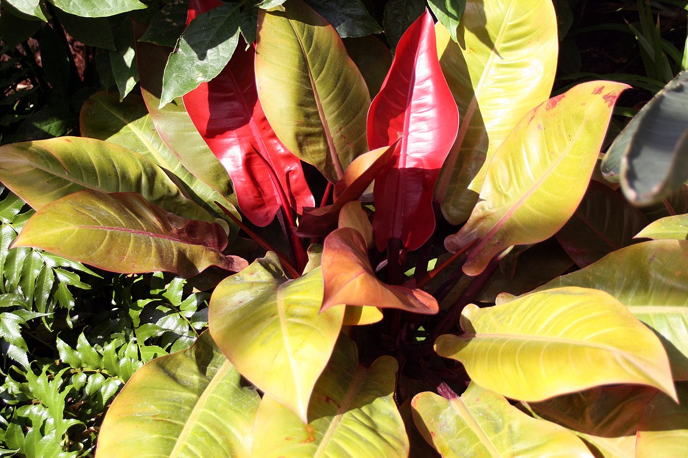
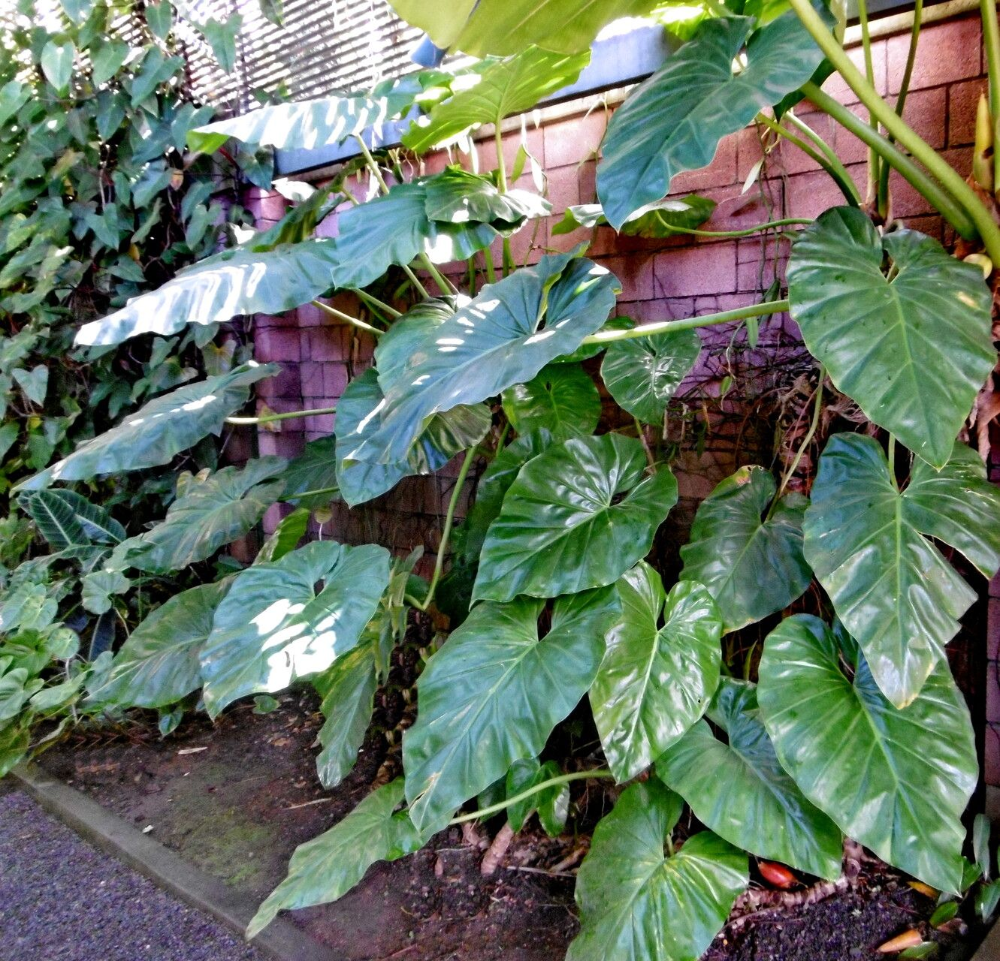

Philodendrons are my favorite type of houseplant. They are easy to care for and can thrive in low light conditions. There are many different types of philodendrons, but for the most part have broad, heart shaped dark green leaves.
| Name | Leaf Characteristics | Care Instructions |
|---|---|---|
| Philodendron 'Brazil' | Climbing, Bright Green, Disntinctly Heart Shaped | Easy care, Indirect Light, Let soil get mostly dry before watering from the bottom |
| Philodendron 'Pink Princess' | Bushy, Dark green leaves with bright pink variegation, Elongated heart shape | Easy Care, Indirect Light, Let soil get mostly dry before watering from the bottom |
| Philodendron 'Prince of Orange' | Bushy, Bright coral colored leaves that turn light green as they age, Elongated heart shape | Easy Care, Indirect Light, Let soil get mostly dry before watering from the bottom |
There are many types of Philodendrons, including climbing and bushy varieties. One of the most common that you've probably seen or maybe even have is the Philodendron Brazil. It is a climbing variety that many people get as one of their first house plants. My personal favorite it the 'Pink Princess' Philodendron, because of the beautiful bright pink spackles on the leaves. There are many varieties that are bred to show dazzling colors when their new leaves form. For the most part, the color fades as the leaf gets older, but when they first start coming in they can have stunning bright colors. Below is a picture of a Philodendron with several new leaves sprouting.
Learn more:
Visit this link for more in depth care tips:
